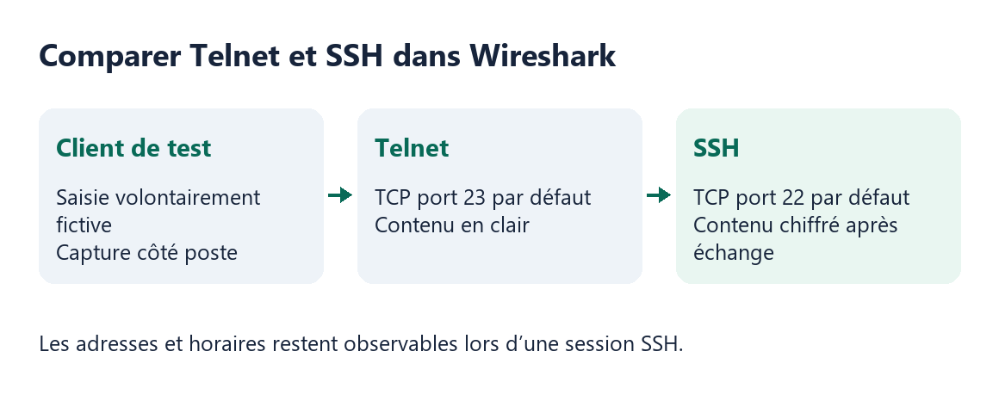

Comprendre le cours
Identifiants, fuites et coffre de mots de passe
Choisis une phrase maître longue, unique et mémorisable. Le générateur peut produire des mots de passe aléatoires propres à chaque site. Garde une sauvegarde testée du coffre et configure la double authentification sur tes comptes quand le service le permet.
Une base KeePassXC utilise le format KDBX. Le fichier-clé peut compléter le mot de passe maître. Conserve une copie récupérable selon ta configuration et évite d’afficher des secrets dans le compte rendu.

Reconnaître un message de phishing
Vérifie la cohérence avec une demande attendue, survole le lien pour voir l’adresse et ouvre le service par ton favori pour confirmer. Un document inattendu ou une demande de code à usage unique mérite une vérification indépendante.
Après une saisie accidentelle, change le secret depuis le service légitime, révoque les sessions pertinentes et contacte le support concerné.
Observer le réseau avec Wireshark et Nmap
ip -br addr et ip route servent à vérifier l’adresse, le préfixe et les routes du poste Linux. Dans Wireshark, applique un filtre comme arp || icmp pour sélectionner des paquets déjà capturés.
Pour la découverte d’hôtes en maquette, nmap -sn 192.0.2.0/28 montre les hôtes détectés sans scanner leurs ports. Pour tester une machine voisine autorisée, choisis quelques ports, par exemple nmap -p 22,80 192.0.2.10, puis interprète le résultat depuis ce point d’observation.
Protéger un poste en déplacement
Évite la reconnexion automatique à des réseaux inconnus et utilise le VPN prévu par ton organisation si son accès le demande. Sauvegarde avant le déplacement et teste la récupération.
En cas de perte, préviens rapidement le support. Applique sa procédure de révocation des sessions ou certificats et d’effacement à distance quand cette gestion a été prévue.
Sigles et acronymes
- CVE · Common Vulnerabilities and Exposures
- Identifiant public d’une vulnérabilité répertoriée.
Exemple. Dans un rapport, l’identifiant CVE permet de retrouver la fiche et le correctif associé. - CVSS · Common Vulnerability Scoring System
- Système de notation de la gravité d’une vulnérabilité.
Exemple. Un rapport donne la version de CVSS, le score et les facteurs qui expliquent ce score. - IP · Internet Protocol
- Protocole d’adressage et d’acheminement des paquets.
Exemple. Le routeur lit l’IP de destination pour choisir où envoyer le paquet. - SSH · Secure Shell
- Connexion distante chiffrée.
Exemple. Depuis ton poste, tu ouvres un terminal distant sans exposer les commandes en clair. - TCP · Transmission Control Protocol
- Transport des données avec suivi des échanges et retransmission.
Exemple. Les routeurs BGP établissent une session TCP avant d’échanger leurs annonces. - VPN · Virtual Private Network
- Liaison privée logique sur un autre réseau.
Exemple. Un étudiant peut passer par un VPN pour joindre un service interne à distance.
Du cours aux TD et TP
Le TP est disponible dans le téléchargement. Les exemples réseau de la page utilisent des valeurs de maquette. Les résultats de capture et de scan se vérifient dans ton environnement de TP.
Questions TD & TP
TP · Créer et utiliser un coffre KeePassXC
Énoncé reformulé. Créer une base chiffrée, ajouter deux entrées et expliquer comment tester l’intégration au navigateur.
- Crée et enregistre un fichier KDBX. Configure le secret maître et explique la fonction d’un éventuel fichier-clé. KeePassXC propose notamment AES ou ChaCha20 pour le chiffrement de la base.
- Crée une entrée de démonstration, puis une seconde utilisant le générateur. Note la longueur et les jeux de caractères choisis, puis verrouille et rouvre le coffre.
- Active l’intégration navigateur dans les préférences, installe KeePassXC-Browser depuis la boutique de Firefox, connecte l’extension et autorise seulement le coffre de test. Utilise un site de maquette et masque les secrets dans les preuves.
TP · Comparer le contenu d’une capture Telnet et SSH
Énoncé reformulé. Observer les trames d’une session Telnet puis d’une session SSH et expliquer la différence de confidentialité.
- Démarre Wireshark sur l’interface de TP, ouvre deux sessions de laboratoire et saisis une commande inoffensive comme
whoami. - Filtre avec
tcp.port == 23puis utilise « Suivre le flux TCP ». Répète sur le port 22 et compare les données visibles une fois les clés de session en place. - Pour la partie découverte, calcule d’abord la diffusion du sous-réseau. Avec
192.0.2.64/26, le dernier octet va de 64 à 127 et l’adresse de diffusion est192.0.2.127. Une absence de réponse à un ping de diffusion ne prouve pas que le réseau est vide.
TP · Justifier un diagnostic de phishing et lire les états d’un scan
Énoncé reformulé. Décrire les indices d’un mail trompeur et relever les états des ports d’une machine de laboratoire, puis expliquer ce qu’ils signifient.
- Lis l’adresse complète de l’expéditeur et le domaine de chaque lien. Si la demande est inattendue, vérifie directement sur le portail habituel ou avec le support.
- Dans l’environnement du TP, utilise une cible et des ports autorisés. Lance la commande depuis le poste désigné et relève la date et l’interface.
- Pour chaque résultat, note
open,closedoufilteredet rédige une conclusion limitée à ce que la sonde a montré. Termine par le numéro de port et le service confirmé séparément si nécessaire.